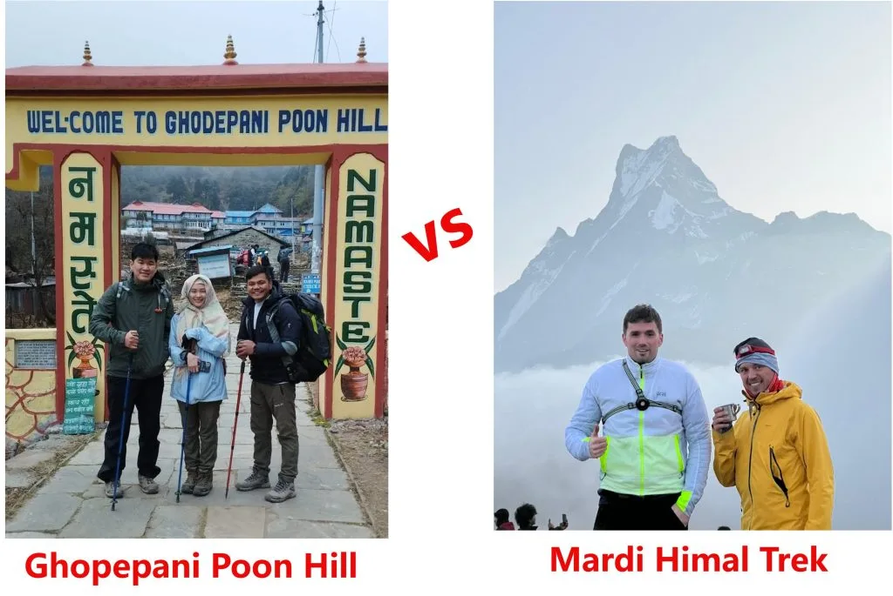
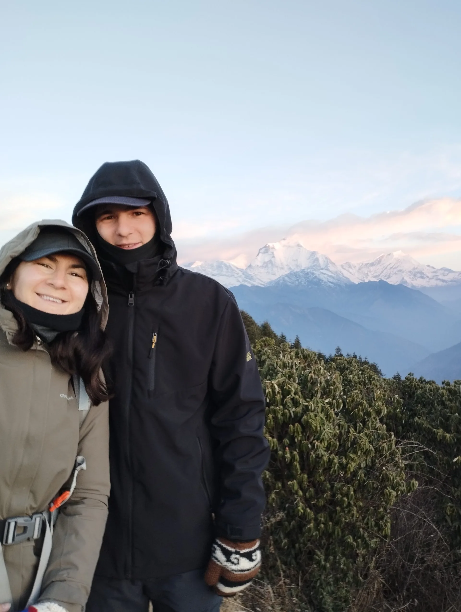

Two Short Annapurna Classics: The Quick Answer
If you only have time to read one paragraph: Poon Hill is the easier, more cultural, more comfortable trek; Mardi Himal is the higher, wilder, more dramatic one. Poon Hill gives you one spectacular sunrise and a rich village-to-village walk. Mardi Himal gives you days of continuous ridgeline views and a genuine high-altitude push to 4,500 metres.
Both routes sit inside the Annapurna Conservation Area, both start from the Pokhara side, and both can be completed in 4 to 5 days. The right choice depends on your fitness, your appetite for altitude, and what kind of mountain day you dream about.
Rule of Thumb: Choose Poon Hill if you are a first-timer, travelling with family, or want comfort and culture. Choose Mardi Himal if you are reasonably fit, want a true alpine feel, and prefer quieter trails. Have 8+ days? Combine them.
Head-to-Head Snapshot: The Numbers That Matter
Before the detail, here is the whole comparison at a glance:
| Factor | Ghorepani Poon Hill | Mardi Himal | Edge |
|---|---|---|---|
| Maximum Altitude | 3,210 m (Poon Hill) | 4,500 m (Base Camp) | Mardi for altitude; Poon Hill for safety |
| Typical Duration | 4 - 5 days | 5 - 6 days | Poon Hill is slightly shorter |
| Difficulty | Easy to Moderate | Moderate | Poon Hill is more beginner-friendly |
| Trail Surface | Stone staircases (3,280 at Ulleri) | Dirt, roots, alpine grass | Mardi is kinder on knees |
| Headline View | Dhaulagiri + Annapurna sunrise | Machapuchare close-up from the ridge | Different strengths |
| Lodge Comfort | High: hot showers, bakeries, 4G | Moderate: simpler, shared facilities up high | Poon Hill |
| Crowds | Busy in peak season | Quieter | Mardi Himal |

Altitude & Acclimatization: 3,210m vs 4,500m
Altitude is the single biggest practical difference. On the Poon Hill circuit you sleep no higher than Ghorepani (2,860m) and only spend an hour or two at the 3,210m viewpoint before dropping back down for breakfast. Altitude sickness is rare and usually limited to a mild headache.
Mardi Himal climbs from about 1,770m at Kande to 3,580m at High Camp in just two days, then pushes to 4,500m on day three. That is a fast gain, which is why Mardi Himal asks for better pacing, more hydration, and a firm willingness to turn around if symptoms appear. The 'climb high, sleep low' pattern, reaching Base Camp from High Camp and then descending to sleep lower, does keep the risk manageable for most healthy hikers.
Altitude Reality Check: Mardi Himal is not technical, but 4,500m is genuine high altitude. Drink 3 to 4 litres of warm fluid daily, ascend slowly, and never continue upward with a worsening headache, nausea, or loss of coordination.
Difficulty & Terrain: Staircases vs Steep Ridge Paths
Poon Hill is the gentler trek overall, but it has one famous hurdle: the 3,280 stone steps of Ulleri on day one. They are relentless, yet short in total duration, and the rest of the route is rolling forest trail with generous rest stops.
Mardi Himal has far fewer stairs but a steadier, steeper gradient. You climb almost continuously from Forest Camp to High Camp, and the descent from High Camp to Siding drops roughly 1,800 vertical metres through tree roots and loose soil, which tests quadriceps and balance. The final stretch to Base Camp also includes narrow ridge sections with drop-offs.

Scenery & Views: Sunrise Balcony vs Ridge-Top Immersion
Poon Hill is famous for one perfect moment: sunrise from the viewing tower, with Dhaulagiri I (8,167m), Annapurna I (8,091m), Annapurna South, Machapuchare, Nilgiri, and Tukuche all lit in sequence. It is a 360-degree spectacle you can enjoy with a short pre-dawn climb and a hot breakfast.
Mardi Himal offers sustained immersion. Above Badal Danda you walk on an open crest for most of two days, with Machapuchare, Annapurna South, and Hiunchuli close enough to feel enormous. The Upper Viewpoint (4,200m) and Base Camp (4,500m) put you almost eye-level with glaciated faces that Poon Hill can only show in the distance.

Culture & Villages: Gurung-Magar Heritage vs Wilderness Ridge
If cultural immersion matters, Poon Hill wins. The circuit passes through Ulleri, Ghorepani, Tadapani, and Ghandruk, living Gurung and Magar villages with slate-roofed houses, terraced fields, local museums, and a rich Gurkha soldiering heritage. You sleep in family-run lodges in settled communities nearly every night.
Mardi Himal is more wilderness than village. The upper camps are seasonal lodge clusters rather than long-established settlements. You see local culture mainly at the start and end, at Kande, Australian Camp, and the Siding or Landruk descent, where traditional farming hamlets give a quieter, less touristed glimpse of Gurung life.
Teahouses, Food & Comfort: Established vs Developing
Poon Hill teahouses have been refined over decades. Expect clean private rooms, reliable hot showers, bakeries in Ghorepani with apple pie and espresso, extensive menus, and strong mobile data. Many lodges in Ghorepani and Ghandruk offer attached bathrooms.
Mardi Himal lodges have improved fast but remain simpler. Forest Camp and Low Camp are comfortable; Badal Danda is charming; High Camp (3,580m) is rustic, with unheated rooms and bucket-style hot water. Menus focus on dal bhat, noodles, fried rice, porridge, and soup rather than bakery treats.
| Amenity | Poon Hill Circuit | Mardi Himal Trail |
|---|---|---|
| Hot Showers | Widely available, solar and gas | Available lower down; bucket hot water at High Camp |
| Attached Bathrooms | Common in Ghorepani and Ghandruk | Rare above Low Camp |
| Bakeries & Variety | Yes, in Ghorepani | Limited; mostly local staples |
| Mobile / WiFi | Strong 4G, paid WiFi | Patchy 4G, weather-dependent WiFi |
| Room Heating | Dining room only | Dining room only; colder nights |

Crowds & Atmosphere: Social Hub vs Quiet Ridge
Poon Hill is one of the most visited short treks in Nepal. In October and April, Ghorepani fills quickly and the sunrise tower can be crowded with dozens of photographers. It is lively, social, and fun, but not solitary.
Mardi Himal draws roughly a third of that traffic, so you often walk for long stretches with only wind and prayer flags for company. If you want solitude and a quieter evening in a small dining room, Mardi Himal is the better pick, especially outside peak weeks.

Typical Itineraries Compared: 4-Day Poon Hill vs 5-Day Mardi Himal
Both routes are efficient. Here is how the standard schedules stack up day by day:
| Day | Poon Hill (4 Days) | Mardi Himal (5 Days) |
|---|---|---|
| Day 1 | Drive to Tikhedhunga, climb Ulleri steps (1,960m) | Drive to Kande, trek to Forest Camp (2,550m) |
| Day 2 | Ulleri to Ghorepani through rhododendron forest (2,860m) | Forest Camp to High Camp via Badal Danda (3,580m) |
| Day 3 | Poon Hill sunrise, trek to Tadapani (2,630m) | Pre-dawn push to Base Camp (4,500m), descend to Low Camp (2,970m) |
| Day 4 | Tadapani to Ghandruk, drive to Pokhara | Low Camp to Siding (1,750m) |
| Day 5 | - | Short walk to roadhead, drive to Pokhara |
Best Season & Weather: When Each Trek Shines
Both treks follow the same seasonal rhythm, but exposure matters. Poon Hill's sheltered forests tolerate a wider weather range; Mardi Himal's open ridge is more affected by wind, cloud, and cold.
- Autumn (Oct to Nov): Best overall for both. Clear skies, stable weather, and the sharpest mountain views.
- Spring (Mar to Apr): Poon Hill is spectacular when the rhododendron forests bloom. On Mardi Himal, mornings are clear but cloud often rolls in by early afternoon.
- Winter (Dec to Feb): Poon Hill stays comfortable; Mardi Himal's upper ridge is snowy and cold, with microspikes recommended.
- Monsoon (Jun to Aug): Neither is ideal: leeches, mud, and hidden views. Poon Hill is the safer fallback.

Cost Comparison: Permits, Transport, Guide & Daily Budget
Costs are similar because both use the same permits and similar daily rates. The main differences are trip length and transport.
| Expense | Poon Hill (4 Days) | Mardi Himal (5 Days) |
|---|---|---|
| Permits (ACAP + TIMS) | ~$38 | ~$38 |
| Private Transport | ~$60 - $75 | ~$75 - $100 |
| Lodging & Meals | ~$100 - $140 | ~$130 - $170 |
| Licensed Guide | ~$105 - $135 | ~$130 - $170 |
| Total Estimate (guided) | ~$290 - $380 | ~$490 - $630 |
Mardi Himal typically costs a little more because of one extra day and the return jeep from Siding, but both remain among the best-value treks in Nepal.
Who Should Choose Which? Traveller Profiles
Choose Poon Hill if you are: a first-time trekker, travelling with children or older relatives, drawn to Gurung culture, keen on comfortable lodges, or visiting in spring for the rhododendron bloom.
Choose Mardi Himal if you are: reasonably fit, comfortable with altitude, a photographer after ridge-top vistas, looking for fewer crowds, or wanting a tougher, more adventurous feel in under a week.

Can You Combine Both? The 8 to 10 Day Poon Hill + Mardi Himal Link
Yes, and many trekkers do. With 8 to 10 days you can walk Poon Hill first, then continue from Tadapani or Ghandruk via Landruk toward the Mardi Himal trail, or reverse the order. This link gives you the cultural richness of the Poon Hill villages and the high-alpine finish of Mardi Himal in one itinerary.
Combo Advantage: Starting with Poon Hill acclimatizes you gently to 3,210m before you attempt Mardi Himal's 4,500m, making the high push noticeably easier.
Final Verdict & Five Rules for Either Trek
There is no wrong answer here. Poon Hill is the most welcoming introduction to Himalayan trekking; Mardi Himal is the most rewarding short alpine ridge near Pokhara. Pick the one that matches your fitness and appetite for adventure, then follow these rules:
- Start early every day: Mornings are clearer and cooler on both routes.
- Use two trekking poles: They protect your knees on stairs and descents.
- Hydrate steadily: Aim for 3 to 4 litres of warm fluid daily.
- Carry cash: There are no ATMs on either trail.
- Trek with a licensed local guide: Igloo Himalaya Treks handles permits, transport, rooms, and safety for both routes.

Ready to Experience the Himalayas?
Whether you are preparing for high-altitude trekking, cultural circuits, or alpine summit expeditions, start planning a bespoke journey tailored to your fitness, travel season, and style.